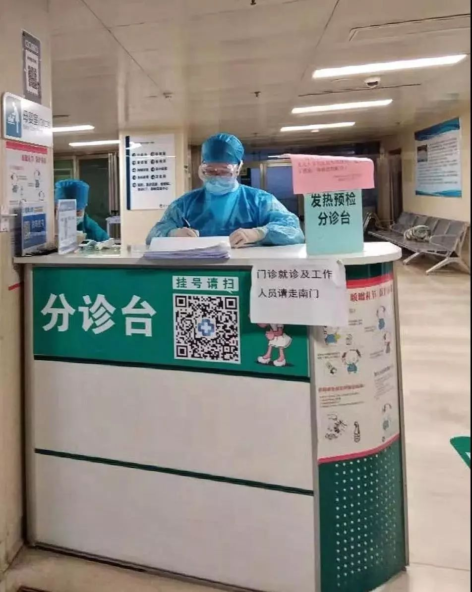

武汉600多公里外，我在县城医院抗疫
原文链接 备份链接 - 疫 情 之 下 - 直到1月27日，我院发出接受社会捐赠的公告时，我才知晓，远在千里之外的我们，也没有防护物资了。年初一晚上去支援的我，在桌子边看见的防护用具，就是余下的所有物品。 ” 1 2020年1月25日， …
作家成向阳的妻子是抗疫一线的医护人员，他记录下这些天来与妻子“相隔两地”的日常，虽是分别生活着，却又像始终在一起，一起坚守着，等春天到来。

1月29日 | 晴
上午8点，她套好蓝色无纺布隔离衣、戴好桶帽和护目镜，捂紧三层口罩，正式进入发热患者预检分诊岗。那一刻起，三百五十公里之外，我的心悬着，无法落地。我关起房门，鼻息紧促，只能在电脑键盘上敲出一些文字借以呼吸。
既然谁也不知会怎样，那就让期待平安的心愿将我们彼此相连吧。
晚6点23分，我的弟弟戴着口罩走进卧室里问我：“嫂子有消息吗？”
我说没有。弟弟说，那你赶紧问啊。爸妈都急着呢！我让他看了下微信，6点15分起，我已给妻子发了12条问询是否安全下班的信息，但没有回复。

工作中的作者妻子
此刻，弟弟在替父母等我妻子的平安消息，他坚持堵在我身前等着不走，这让我更加感到内心压抑。但就在此时，妻子在微信里回复了：“老公，我下班了，先去洗一下。”
我就对弟弟说：“她安全下班了，你们都放心。”他说，这就好。你再详细问问她今天的情况，一会儿给我们认真汇报一下。但直到9点钟，我才走出卧室来到客厅，对准备听汇报的一家老少说，她刚刚才回到家，煮了稀饭，热了馒头和昨天剩下的菜。
妻子一边吃饭一边告诉我，上岗第一天，她接诊了二十多个患者。具体数字，她忘了，因为顾不上专门去记数字。那些患者都是专门过来接受发热排查的，他们基本都有明显发热症状，但大多是太原本地人，并没有与武汉患者的接触史。不过，也有三四个有过接触史的。其中一个女子，是在武汉封城之后，自己大年初一悄悄和老公开车从湖北孝感的一个县里自驾回的太原。
“这个人的症状非常特殊。接诊她的时候，我紧张，更小心翼翼。但是她很配合，很积极地去了发热门诊做进一步检查。”
我忍不住问：“防护措施好不好？工作条件行不行？”
她说：“医院已经把能注意到的都注意到了，隔离措施是到位的。但医疗物资紧张，像我们身上穿的隔离衣，若按严格规定，每套只能穿脱一次，且4小时内就得更换，但现在只能每人一天一套。这样一来，一天都不能喝水，好尽量避免上厕所。吃午饭的时候，才能先慢慢把隔离衣脱下来，吃完饭，上一下厕所，再慢慢把自己套进去。”
我妈性急，说这么麻烦，又那么金贵，就穿着那个衣服吃饭吧，还脱它干啥呢？我妈妈根本不知道，穿脱隔离衣与防护服，是她们医护人员的一个重要操作项目，每一步都必须做到无菌操作。穿上要五步：取衣—穿衣袖—系衣领—扎袖口—系腰带。脱下来也得五步：解腰带—解袖口—消毒双手—解领口，脱衣袖—挂衣钩。然后还有帽子、护目镜、三层口罩、橡胶手套。
我说大家不要担心了，她自己会照顾好自己的。
1月30日 | 晴

工作中的作者妻子
她上后夜班，也就是要从当晚10点开始做上岗准备，然后从31日的凌晨两点工作到上午9点。晚9点10分，她给我发来三个视频，背景是她们医院发热门诊大厅前空而寂静的街道，隔离警戒线与标牌，一个捂着白色口罩提着胸片袋行走的模糊身影。隔着被惨白灯光照亮的玻璃门，里面是发热预检分诊处，角落上一个孤零零的绿白两色相间的分诊台，上面有个醒目的“挂号请扫”二维码。
她说，再过一会儿，我就要站到这个分诊台后整理今天白天和前夜的病患资料，2点开始，随时准备接诊。
1月31日 | 晴
房顶上，积雪融化。
上午9点30分，在她工作7小时后，我卡着时间发微信问她：“老婆，下班了吗？”
她立即就回复了：“下了下了，刚洗完澡。”又说：“昨晚没有发热患者过来，我空站了一个晚上，可是，比前天有人来时还要紧张。现在我回家休息会儿，下午6点过来，要再上一个前夜班。”
当晚9点30分，她在医院特设的防疫人员就餐处偷偷给我发微信：“老公，我正在吃晚饭。一会继续上班。刚才有一阵儿，特别想儿子，他左胳膊上的那一小片皮炎，要坚持上药，涂药前，一定用温水认真洗干净。还有他的牙，长起来了吗？”
我说你放心。我一定会侍候好儿子。今天有发热患者吗？
她说：“有十来个挂号的。两个有接触史。好了，我不说了。我去上厕所，马上就要接着上班。”
2月1日 | 有雾，阴冷
早上6点，我一睁眼就看见她发来的微信：“下周的排班表刚刚发出来了，我要再连上5天。年假结束了，疫情爆发期也来了，这几天可能会有更多患者来分诊。老公，我很紧张。”
又说：“我们科和我一起来支援防疫的小吴，已经从发热病房撤下来了。但还没有让我撤岗的消息。我心里有点受不了啦。”

2018年春节，一家三口在作者老家山西晋城
我说，要不，你去找找你们书记吧。和他说说你的情况。
她马上说：“那怎么能行！换人是护理部决定的事情。再说我在发热分诊这才上了几天？怎么好意思现在就找领导说困难。现在，哪一个不是在使劲扛着？我先上完这五天再看情况吧。”
一瞬间，我无语。
也就是这一天上午，我在老家村里第一次接受了登记与测温。我才忽然知道，在坚守近十天之后，我脚下这一小块被太行山、中条山、丹朱岭与黄河重重捍卫着的无疫净土也终于失守。几乎就在一瞬间，村里气氛骤然紧张，道路与居民区严密封闭，每家每天只限一人进出一次。
也就是这一天上午，我忍不住抑郁。一时间沮丧，悲哀，难以自抑，无处消散。但又说不清楚究竟是什么力量，我竟然也就那样恢复过来了。我明白在这场与疫情的抗争中，没有一个能是局外人。我能做到的就是保护自己，带好孩子，照顾好老人，给她一个稳定的后方。
她说：“你把口罩挂到阳光下好好晒一晒。我最后悔的就是回家前没给你和儿子多准备几个口罩。”
我说你放心好了，我轻易不出门的。

我真的强迫自己不出门，我像作家池莉女士那样将自己隔离在卧室中。空处斗室，思念更容易向着窗外的远处绵延——我想她是怎样在夜深人静时分骑一辆小黄车沿着空无一人的新城街、五一东街、迎泽大街、解放南路，然后终于到达文源巷里的发热预检分诊入口，想她是怎样在并无患者前来的分诊台里穿着隔离衣戴着护目镜空守静夜，想她在随时都会有紧捂白口罩的陌生人突然推门而入带来一片不安的夜晚会想些什么。但我知道，她肯定会一眼都不眨，带着她的紧张，带着她的职业耐力，带着对我与孩子的爱，就像兄弟连里的一个中士，蹲守在1945年圣诞节后的巴斯通散兵坑里，枪口指着雪野危机四伏的前方。
2月3日 | 晴
早晨太阳明亮，喜鹊的影子掠过古铜色的屋墙。
是她五天连轴转的第一天。早上7点半，我叮嘱她：“老婆，今天尤其要注意啊。年后上班的人都返岗了，患者可能会特别多。”
晚7点，她说：“我下班了，刚洗完澡出来，准备找个自行车回家。”我说好，等你回家咱们再说。半小时后，我连着两次发起视频，没有接通。直到8点10分，她发微信说：“我刚回来，骑自行车，半路上骑不动了，所以就晚了。”
我忽然想起，结婚十年来，几乎每一个夜班，都是她自己去自己回的。而我心里生出愧疚，这还是第一次，我感觉到她真的很累，很不容易。
2月4日 | 晴
下午2点，微信里一个从意大利回来的北京朋友忽然说，他家里的花草全枯了。我忽然就想起我们另一所房子中的花草。平日里它们都是我打理的，这段时间，她这么忙乱，花草可怎么办呢？我问：“老婆，咱们那些花草也不知道怎么样了？”
她说：“前天我刚去浇过的呀！都挺好的。就是从我爸家里移过来的那盆消毒草有点枯了。爸说它们其实很好活，把干枯的剪一剪就可以。”
我说：“这我知道，等春天了，我再好好修剪一下。”

这一天是立春，百草回芽。我隔窗拍摄小区外的枯草丛，放大后已可见一点微末的新绿。一瞬间，我想和她说几句关于春天的话，但我停在微信对话框里的手指，犹疑着发出的是：“儿子很好，天使，你也好吗？”
晚上10点，她说：“我到单位了，先稍微睡一会儿，1点起来，准备接班上后夜。”
2月5日 | 阴，夜有雪来
早上7点，她说：“我下班了，准备去洗澡。昨晚只有四五个普通发热的，你放心。但老家这几天越来越严重了，村里离城区不到10公里，你要高度警惕。” 又说：“我一会回家洗洗衣服，晚上6点还要过来接班，准备再上前夜。这个连轴转的班，真是特别紧张。我如果不回复信息，就是在上班。”
晚9点，她突然给我发视频，我还以为出了什么事情，赶紧接起一看，只见她端着一只纸杯在饮水。她说我正在单位餐厅吃饭，问候一下你和孩子。然后就突然听到有人在远处叫她。她放下杯子说，我得赶紧过去了，明天再说啊。
晚11点半，我忽然发现窗外飘起了春雪。那雪粒轻细而安静，如我身后孩子的呼吸。
2月6日 | 雪，午后转阴
黎明，我忍不住出了一次门。昨夜开始的雪已越来越大，密集的雪片飘飘抖抖落于阔大的麦田。喜鹊好像消失了，阡陌纵横，却只有羊蹄。我赶紧返回我的斗室，隔窗以邻居家的红色铁门为背景，给她拍了一个春雪飘飞的视频。
我说：“你看这春雪，你看邻居门上的家和万事兴。我们一定都要好好的。”
但我没有告诉她昨晚我看了武汉朋友发来的城市大消毒的视频，以及我妹妹凌晨时发来的提醒。那上面说，大雪会将天空漂浮的病毒带到地面，所以要严禁孩子出门玩雪。我不确定这是不是真的，但我也不好问她，因为她和我都知道，我们的儿子是最喜欢玩雪的。
她说：“赶紧控制住这疫情吧。我们这些防疫人员好早日解脱。这几天我都没心思认真吃饭。今天炖一点排骨吧！”
2月7日 | 晴，融雪
早上，我说老婆，今天上午你休息，有时间就替我关注一下儿子学校群里的消息吧。我一晚上没有睡觉，怕耽误了上课的信息。她说，老公，今天我替你看着，你干嘛不好好睡觉呢？
我说，一晚上一直在给儿子掩被子。
2月8日 | 晴，麦地有霜
元宵节。但我却忘记和她说元宵节快乐，因为如果不是有人在微信群里发祝福，我早已忘记今天是个什么日子。而今天，是她又一个五天连轴班的开始，她并没有去找领导提调岗的事，而抗疫之战正在全面攻坚，我们都只能继续坚守。
当一轮满月升起在我的窗外，她说：“老公，下班了，刚买了袋元宵回来，但又不想吃了。今天的七八个病人里，有一个孩子，她就和从武汉回来的同学玩了一天，就从大年初一低烧到今天。测体温时她哭得哇哇的，让人难过。”
我说，老婆，终究是会胜利的。“肺炎一号方”获批临床使用了！春天怎么都会到来，坚持着吧，我们都要坚持。
这一天的太原，一个有接触史的家庭因为瞒报，导致60人被紧急隔离，几条街道全面消毒。这一天，我没敢和她提起的还有，我在确诊患者资料中发现，太原市的第四、第五两例，正是那个从孝感自驾回太原的女子和她丈夫，那是她走上应急防疫岗第一天预检分诊的两个人。
但这些，她其实都是知道的，但也并没有提一个字。
我感到，这是一场仍将延续的持久战，我们仍需更多的忍耐与付出。但这身在疫中却依旧流水式的每一天，我们虽是分别生活着，却又像始终在一起，只是分处两个卧室，中间隔着一个三百多公里的客厅。我相信我们一定会好的，会很快就回到一起，就像这风月同天之下每一个家庭里亲爱着的人们盼望的一样。
春天的阳光会格外将我们照亮。
关于我们：
本公众号乃上海发行量最大的报纸《新民晚报》副刊《夜光杯》的官方微信，《夜光杯》是中国历史最悠久的报纸副刊，在微信平台，我们将以全新的面貌继续陪伴您。欢迎免费订阅，我们将每日精选两篇新鲜出炉的佳作推送到您的手机。所有文章皆为《夜光杯》作者原创，未经允许不得转载。
点击下面的篇目链接，可重读夜光杯微信公众号1月高点击率美文：
原文链接 备份链接 - 疫 情 之 下 - 直到1月27日，我院发出接受社会捐赠的公告时，我才知晓，远在千里之外的我们，也没有防护物资了。年初一晚上去支援的我，在桌子边看见的防护用具，就是余下的所有物品。 ” 1 2020年1月25日， …
原文链接 备份链接 这里是大学生的新媒体实验室 ∆ 再坚持几天，快了…… 轮到你了按： 这是摄影师蔡颖莉隔离在家的第8天。8天前，她与所供职的财新网7位记者抵达武汉新型冠状病毒疫情现场采访。在经历了14小时的一线拍摄后，被迫在武汉封城前撤 …
原文链接 备份链接 播放音乐 | 阅读效果更佳 感谢 | 您对霍超LEGAL的关注、阅读与分享 _特别感谢小吴同学，日记有了衍生周边2333 _ 十分感人的是，在写日记的第五天，收到了小吴同学的漫画祝福，显得自己好像是在有猫、有狗、有光、 …
原文链接 备份链接 先点击上方蓝字关注我喔~ 从我1月22号第一次出现症状开始，到今天是第12天，在2天前，我开始自行退烧了，咳嗽频率也大幅下降，算上今天，我已经退烧3天了，体温一直都在36.5左右，没有反复，至此，我想我已经战胜病毒了。 …
原文链接 备份链接 播放音乐 | 阅读效果更佳 感谢 | 您对霍超LEGAL的关注、阅读与分享 昨天，许多关心和关注我的人看到推送，给予我鼓励和安慰，收到祝福的消息太多，以至于一时让我有些手足无措，没能及时回复还望谅解，在此必须再说一句感 …